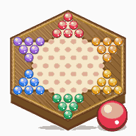

跳棋
⛶
⚙️
選擇玩法

把整組棋子搬到對面的角,連跳一口氣飛過半個盤面
🌐 連線對戰
🎮 單機遊玩
⬢ 怎麼玩
目標:把你角落的棋子
全部搬到正對面那個角
。
先搬完的人贏。
每一手只動一顆
—— 先點自己的一顆棋,盤面會把它
走得到的洞全部亮起來
, 再點你要去的那個洞。
走一格
—— 往旁邊六個方向之一,走到
緊鄰的空洞
。走完這一手就結束。
跳
—— 旁邊
緊鄰
有一顆棋、而它
正後方
是空的 → 可以跳過去。
只能越過
一顆
,而且落點必須
剛好在它正後方那一格
。
隔兩顆、或後面也有棋,
都不能跳
。
連跳(這個遊戲最爽的地方)
—— 跳完之後如果
還跳得動
, 可以在
同一手之內一直跳下去
,一口氣飛過半個盤面。
⚠ 但
走一格就結束
:不能走一格再接著跳。
你只要點
最後要停的那個洞
,中間的路系統會自己走。
★ 誰的棋都能當跳板
—— 越過的可以是
自己人,也可以是對手
。 對手的棋
不是障礙,是橋
:他擺在那裡剛好讓你飛過去。 把自己的棋
排成一條鏈
,後面的就能一路連跳。
不吃子
—— 跳過去
不會
把人打掉。棋子只會移動,不會消失, 所以這個遊戲
不會有人被打回原點
。
卡住怎麼辦
—— 你的目標角就是
對面那家的老家
。 他要是有一顆賴著不走,那個洞就算你
已經填到了
(不然會永遠玩不完)。
盤面上的記號
普通的洞
你的目標角
走一格到得了
連跳到得了
2~6 人
,每人
3 / 6 / 10 顆
(房主決定)。單機可以先跟電腦練一局。 ⚠
5 人
時六個角坐五個人,會有一家的目標角是空的(略佔便宜)。
單機遊玩
電腦強度
🙂 新手
🤔 普通
😈 高手
幾個人玩
2 人
3 人
4 人
6 人
每人幾顆
3 顆
6 顆
10 顆
開始對局
連線對戰
你的暱稱(必填)
建立新房間
＋ 建立房間
或 · 加入朋友的房間
偵測目前房間中…
🔍
–
大
😀
等待中…
單機遊玩
普通
大
對戰設定
誰先走
🎲 隨機
✊ 猜拳
👑 房主排
每人幾顆
3 顆 · 快
6 顆 · 標準
10 顆 · 完整
出手倒數
關
20 秒
40 秒
90 秒
連線計分
🏆 累積排行
🎯 搶勝
先到
－
3
＋
分奪冠
🔒 賽季進行中,重設戰績後才能改目標
↺ 重設戰績
＋
⤢
－
準備好了
本局結束
👍
😂
😭
🤝
😀
🏆 開新賽季
下一局
離開房間
再來一局
回選單
先看看棋盤 👀
🏆 看結果
設定
外觀
主題
音效
開啟音效
音量
震動
(手機)
背景音樂
開啟音樂
曲目
音量
語音（連線）
收到語音音量
我的語音
(自己錄 · 連線可送)
編輯
完成
跳棋 ·
· 開發者 Michael Ho
✕
傳給全部人
💬 一句話
🔊 語音短訊
⭐ 我的語音
🎤 語音留言
🎤
錄一段話送出(6 秒)
送出
✕
我的語音
自己錄 3 秒短語音,連線時可在互動面板當按鈕送給別人。
只存在這台裝置
,換裝置不會跟著走。
儲存
🎤 錄一段新的(3 秒)
0 / 6
🔊 點我播放語音
🚪
離開房間?
確定要離開這個房間嗎?
留在房間
離開房間
⚠️
移出玩家?
確定要把這位玩家移出房間嗎?
取消
移出房間